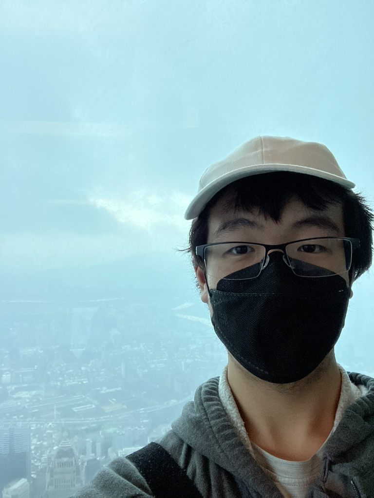

school Education
University of California, Irvine
Aug. 2023 - June 2027 (anticipated)
Bachelor of Science in Computer Science
- GPA: 3.790, Dean's Honor List
-
Selected Coursework: Intermediate Programming, Programming in C/C++,
Software Engineering, Data Structure Implementation and Analysis
done_all Technical Skills
Python, JavaScript, C++, C, .NET, T/SQL, HTML, CSS
rebase_edit Projects
Abacus.AI
- Developed two predictive modeling projects using Abacus.AI's machine learning platform.
- Used SQL for data cleaning and Python for model development.
Code Interpreter (Python)
- Built a simple programming language interpreter.
- Added functionality to generate new code files.
- Learned fundamentals of parsers and interpreters.
STL Implementation (C++)
- Implemented core components of the C++ STL.
- Strengthened understanding of memory management and OOP.
Graph Coloring Algorithm (C++)
- Implemented an optimized graph coloring algorithm.
- Used merge sort to improve performance.
assignment Research
Cambridge Center for International Research
Aug. 2022 - Jan. 2023
- Worked with knowledge representation and reasoning (KRR) algorithms.
- Researched the 8-Queens problem and analyzed 3D solution models.